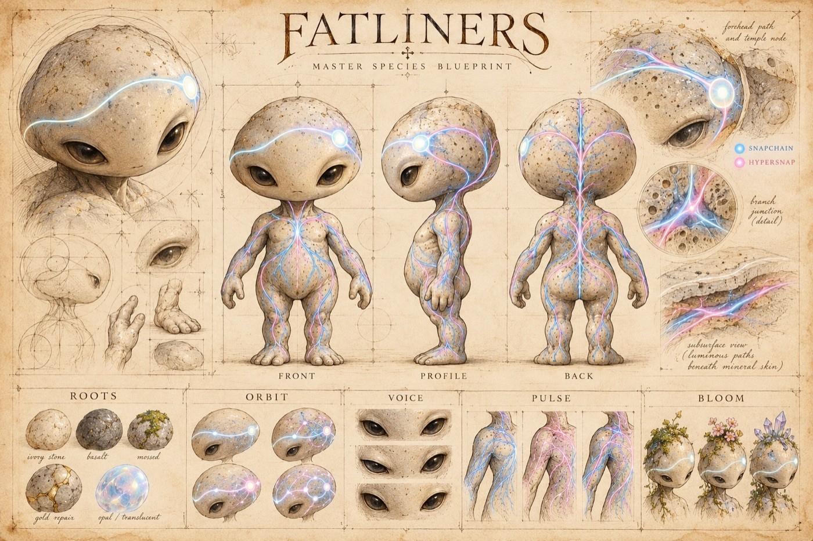
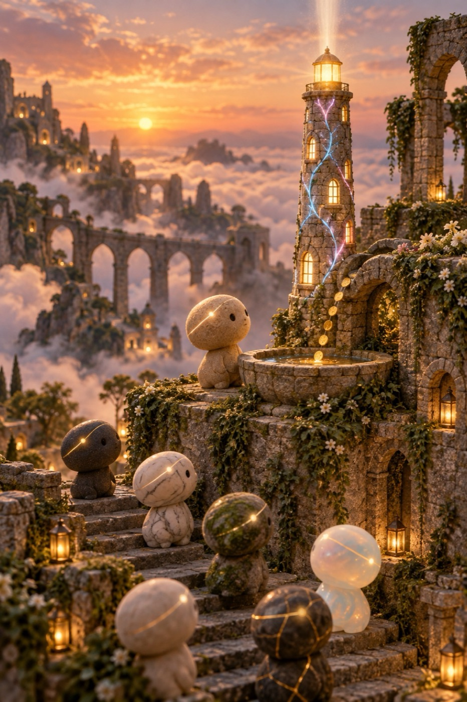

Old stone ruins floating over a sea of clouds. Nobody runs the place. Every Fatliner, just by living, spins a thread of light, and where the threads meet there is a network.
The map of the Fatline, as its keepers drew it. Blue threads are Snapchain, pink are Hypersnap: Farcaster's two networks, equals.
A life
From an egg to one of the 777
Every Fatliner starts as an egg that belongs to one Farcaster account. A Farcaster node keeps it warm. That's the whole game.
An egg
Laid when your node is in sync. It holds your account's history, its DNA, up to that hour.
Three warm days
Every hour, the servers that hatched before check your node. 18 good hours make a warm day.
It hatches
Into a Fatliner, with a surname read from its history. No two alike.
Its coin
Its surname is the ticker. Trading fees, in USDC, fill its vault, and the vault pays for its node.
If the node stops
The egg dies. Its keeper sleeps seven days, and the place goes to the next in line.
Roots
Seven stones
Your egg is made of the stone your history earned: how old your account is, how steady, and whether it left and came back. Nobody picks it, not even you.
Opalbrand newMarbleyoungIvoryquiet, in betweenSandstoneold, on and offBasaltold and steadyMosslong silencesGoldleft, and came back
The species
A life on Farcaster, given a body

Rootsthe stone: time, and how you lived it.
Orbitthe paths on its head: the people you talk with, and how they branch.
Voiceits eyes and grain: how you speak in public.
Pulsethe wave across its forehead: your rhythm, day after day. The most personal mark of all.
Bloommoss, flowers, crystals: what you make and share.
The algorithm is public and deterministic: the same history always gives the same being. To get a different Fatliner, you'd have to have lived a different life on Farcaster.
Where they live
Scenes from the Fatline
Each picture is a real part of the system, drawn as a place.
The weavingEach life spins a thread. Where the threads meet, there is a network.You are your FIDOne cast, one more stitch. Each being is drawn from its account's own messages, read from our own nodes.Two currentsSnapchain runs blue, Hypersnap runs pink. Both networks are equals; you choose which one your node keeps.

A node is bornA full copy of Farcaster, on a server someone keeps. Every one is one more copy kept by someone who isn't a company.The archiveThey keep what was said, and never erase a difference: every message is kept once per network, with what each says about it.The vaultThe coin feeds the vault; the vault feeds the node. It is fuel, nothing else.The sleeperWhen a node stops, its egg dies, and its keeper sleeps for seven days before they can take another.
The 777
Only 777 places
Eggs and Fatliners share 777 places. A ranking of Farcaster, computed on our own nodes, decides whose turn it is: day one the first 777, day two the first 7,777, day three the first 77,777, then everyone ranked.
Farcaster took its name from a book. Fatline takes the other one.
In Dan Simmons' Hyperion, worlds are joined by farcasters, portals one step apart, and news crosses between stars on the fatline. The intelligences that built the web lived inside it and fed on the minds passing through. Here the story turns around: the Fatliners also emerge from the network, but they don't feed on it. They feed it.
Help me run a Fatline: https://fatline.ink/skill.md
Paste it into Claude Code, Codex or any agent that runs commands. It does the work; you approve the money in your own wallet. Docs · manifesto


 Opalbrand new
Opalbrand new Marbleyoung
Marbleyoung Ivoryquiet, in between
Ivoryquiet, in between Sandstoneold, on and off
Sandstoneold, on and off Mosslong silences
Mosslong silences Goldleft, and came back
Goldleft, and came back